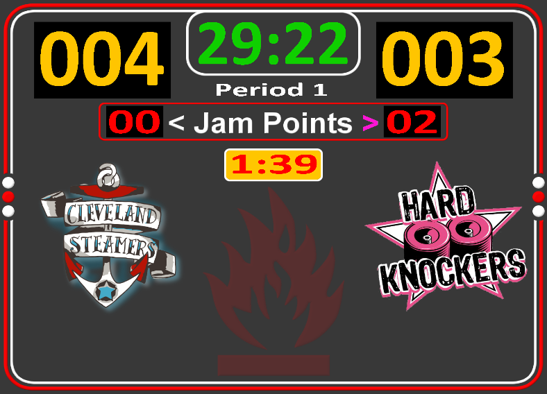
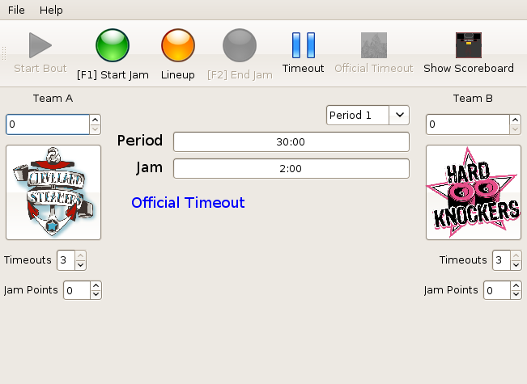

The stylized display.

The control panel.
Derby Score is a small application which can be used as a scoreboard
for Roller Derby bouts. Though there are existing
applications which aim to do similar things some commercial such as
Scoreboard Deluxe
and some free such as
DerbyBoard PC and
Derby Scoreboard, we felt that
there was room to improve. One of the areas which we wanted to focus on was the visual appeal
of the scoreboard making something which was flexible enough and pretty enough to satisfy our
league,
sponsers and
fans.
Derby Score is free of charge and open source sporting a
BSD License, making the source code
available for others to view, use and extend with a few minor conditions. The application is
cross-platform running equally well on Windows, Mac OSX and Linux. Has an extremely flexible
layout and rendering engine allowing for complete control of the look and feel of the scoreboard.
The use of javascript to conditionally modify the display of the scoreboard based on the
domain model of the application.
We hope you try and enjoy the scoreboard and would love to hear your feedback or suggestions
for future improvement.
The quality and reliability of Derby Score and all software is very important to me as a
developer. Nothing would be more embarrassing than having the application fail on bout day.
Since this is an open-souce application we have the freedom to publish the results of tests that
we run against the application before releasing it so that you have confidence in the software
you are using.
We currently use the static-analysis
tool called Findbugs to look for certain classes
of errors within the application. We also use JUnit and
Cobertura to execute unit tests on sections of
the application and to get an idea of how much of the application is being exercised by our
test suite.
The source code for Derby Score is freely available and is released under a BSD License for
your use. You may grab a copy from the subversion repository at the following location.
# svn co https://www.atomic-drive.com/svnroot/derbyscore/trunk derbyscore
I would like to thank Will Hutson aka. Oliver Pist for contributing ideas as to the
feature set and design of the scoreboard, motivation and really nice looking images to use in
the default theme for the scoreboard and for his work in dressing up the league and team logos
for use during our bouts!
If you have suggestions comments or otherwise feel free to send Russ Francis aka.
Algebro a note.
{kind=link}
{kind=link}